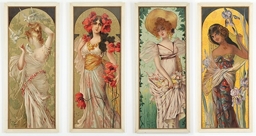

I believe that everything in Nature aspires to the acme of strenght, well-being, and happiness; and everything that derivates from this I call immoral. - Henry van de Velde
Art Nouveau (a term derived from French meaning New Art) is an artistic style manifested in the visual arts, design and architecture of the early 20th century, relatively synchronous in most European cultures and countries.
The style had a maximum of affirmation for about a decade, between 1892 and 1902, reaching its peak with the 1900 Universal Exhibition in Paris.
The essence of Art Nouveau is a line, a long, winding curve, perceptible in any pattern of this style. It rejects the order of the straight line and the right angle in favor of a more natural movement. Whether they are used in the description of natural forms or abstract forms that evoke organic vitality, these winding lines emphasize the decorative element.
Alphonse Mucha was a painter and artist in Art Nouveau style, well known for his unique style. He made several paintings, illustrations, posters, postcards, and designs. He remains one of the great representatives of the style, alongside Gustav Klimt or Charles Rennie Mackintosh.